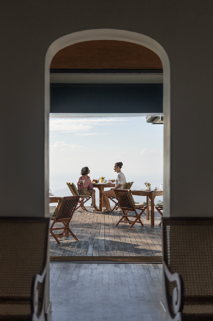

We have organised this guide by region, because where you stay in Sri Lanka shapes the entire character of your honeymoon. The south coast gives you warmth, beach, and intimate luxury. The hill country gives you cool air, silence, and an intoxicating sense of elevation above the world. The south-east offers the wildness of safari country alongside some of the most architecturally extraordinary places to stay in Asia. The most memorable honeymoons in Sri Lanka find a rhythm across two or three of these chapters — and the properties that anchor each one matter enormously.
Sri Lanka earns its place among the world's great honeymoon destinations not through a single iconic image, but through something rarer — genuine variety. A couple can wake up in a colonial tea bungalow at 4,000 feet, be on a leopard safari by the next morning, and watching the Indian Ocean turn gold from a clifftop infinity pool two days after that. The island is compact enough to move between worlds without long transfers, and its collection of intimate luxury properties is quietly exceptional. These ten know exactly how to make a honeymoon feel like something more than a holiday.
01 · South Coast

Amanwella
Tangalle · Aman Resorts
Amanwella may be the most quietly perfect honeymoon hotel in all of Sri Lanka. Thirty suite villas cascade down a hillside above a crescent of private beach near Tangalle — each with its own infinity plunge pool, a shaded sun deck, and views across the Indian Ocean that do something useful to the nervous system. The Aman approach to hospitality — unhurried, immaculate, completely attuned to what guests need before they know they need it — suits a honeymoon more naturally than almost any other property on the island.
Suites 110 to 112 sit closest to the beach and offer the most seclusion. The beach itself is one of the south coast's most beautiful stretches — calm enough for swimming in season, dramatic enough at other times of year to make sitting with a glass of wine and watching the waves perfectly sufficient. Candlelit beach dinners can be arranged with a day's notice, and the spa offers couples treatments in an open-sided pavilion that makes the sound of the ocean part of the experience.
Private Infinity Pool Per Villa
Secluded Beach Cove
Couples Spa Pavilion
Beach Dinner by Arrangement
Aman Service
Amanwella, Tangalle — thirty villas, one secluded beach, zero interruptions
Destinova Insider
Amanwella's beach faces south-west, which means the sunset from your pool terrace is exactly what you imagine. Request a higher villa for the widest ocean panorama, or suites 110–112 if proximity to the beach matters more than the elevated view. We always pre-arrange the couples' spa and beach dinner as part of any honeymoon itinerary here.
02 · South Coast

Cape Weligama
Weligama Bay · Relais & Châteaux
Cape Weligama sits high on a headland with panoramic views across Weligama Bay, and its suites and villas — many with private infinity pools that appear to hover directly above the sea — create the particular kind of suspended intimacy that a honeymoon calls for. The property was extensively renovated in 2025, and the result is a resort that has sharpened its already considerable sense of design without losing its warmth.
The cliffside infinity pool — half-moon shaped, edged with the Indian Ocean — is one of the most photographed spots in Sri Lanka for a reason: it genuinely looks the way it does in pictures. Couples can arrange private dinners on the pool terrace, on the cliff's edge, or in the herb garden, and the in-villa dining menu allows for complete privacy on evenings when the world outside feels unnecessary. The spa team is among the most skilled on the south coast, and the hotel's position between Galle and the east coast makes it a natural base for exploring either direction.
Clifftop Infinity Pool
Private Pool Suites
In-Villa Dining
Cliff-Edge Private Dinner
Couples Spa
Cape Weligama — where the Indian Ocean becomes your private view
03 · South Coast
Anantara Peace Haven Tangalle
Tangalle · Southern Province
Anantara Peace Haven is a different proposition from Amanwella and Cape Weligama — broader in scale, with 32 private pool villas spread across 21 acres of coconut plantation directly above a secluded golden beach. Where the others feel intimate and almost hidden, Anantara feels spacious and generous, with a quality of light and open air that seems to lift the entire property.
The private pool villas are designed with honeymooners in mind: outdoor rain showers, private garden terraces, and plunge pools shaded by palms that have a specific kind of quiet that's hard to find anywhere else. The beach below — reached via a winding path through the coconut grove — is one of the south coast's most beautiful, with a sandbar that glows in the early morning. The spa offers an acclaimed couples' journey ritual using traditional Sri Lankan botanicals, and candlelit beach dinners can be arranged on the sand as the sun drops into the sea.
Private Pool Villas
Beachfront Sunset Dinners
Sri Lankan Couples Spa Ritual
21-Acre Coconut Estate
Outdoor Rain Showers
04 · South Coast
Amangalla
Galle Fort · Aman Resorts
Amangalla occupies a 17th-century Dutch colonial building at the heart of Galle Fort — a UNESCO World Heritage Site — and offers a form of romance that is entirely different from the other properties on this list. There is no beach. There is no pool perched above the ocean. What there is instead is one of the most historically resonant buildings in Asia, sensitively restored to a state of quiet grandeur: high ceilings, teak columns, a deep veranda overlooking the fort's cobbled streets, and a sense of being inside a story rather than simply staying in a hotel.
Galle Fort at dusk — when the tour groups have left and couples walk the ramparts in the golden hour, the Indian Ocean glittering below — is one of the most romantic settings in Sri Lanka. The hotel's Baths, originally built by the Dutch in 1684, have been transformed into an extraordinary spa that rivals anything on the island. For couples who want culture, history, and the particular atmosphere of a place that has held centuries of beauty, Amangalla offers something none of the beach resorts can match.
17th-Century Dutch Colonial Building
Inside Galle Fort (UNESCO)
Historic Baths Spa
Fort Rampart Sunset Walks
Aman Heritage Property
Destinova Insider
Amangalla and Amanwella are just forty minutes apart, and we often pair them as the perfect south coast chapter — two or three nights inside the Fort for culture and history, then three nights at Amanwella for the beach and complete seclusion. Two very different kinds of romance, one seamless journey.
"The best Sri Lanka honeymoons aren't built around one resort. They move through different moods — the warmth of the coast, the cool quiet of the hills, the wildness of the south-east — and find something irreplaceable in each."
05 · Hill Country


Ceylon Tea Trails
Hatton · Dilmah Collection
Ceylon Tea Trails is not one property but a collection of five restored colonial-era tea planter's bungalows set among the tea estates of Hatton — each sitting on its own hillside, each sleeping a small number of guests, and each staffed by a butler and a dedicated cook who will prepare anything you ask. The concept is simple and brilliant: the entire bungalow is yours, and nothing in it belongs to anyone else for the duration of your stay.
Tientsin Bungalow is the jewel for honeymooners — its heated Jacuzzi on the terrace, positioned to look out over rows of tea through rising mist, is among the most quietly extraordinary things a couple can sit in together anywhere in the world. Castlereagh Bungalow offers lake views and one of the most beautifully proportioned colonialtakerace verandas on the estate. Days here have a particular quality: a slow walk through the estate in the early morning, high tea on the veranda in the afternoon, a wood fire crackling in the sitting room as the temperature drops after dark. Time moves at a different pace in the hills, and Tea Trails lets you inhabit it completely.
Exclusive-Use Bungalows
Private Butler & Cook
Heated Terrace Jacuzzi (Tientsin)
Working Tea Estate
High Tea on the Veranda
Tientsin Bungalow's heated Jacuzzi and Castlereagh Bungalow — Ceylon Tea Trails
Destinova Insider
Tientsin is the most in-demand bungalow for honeymooners and books out months in advance during the peak November–March season. We advise securing this as one of the first things we confirm when building a hill country itinerary. A minimum of three nights does the elevation justice — two feels rushed once you've felt the pace of the hills.
06 · Hill Country
Thotalagala
Haputale · Southern Highlands
Thotalagala occupies a 19th-century tea planter's bungalow on a ridge above Haputale, at an elevation where clouds drift through the gardens on some mornings and the view on clear days stretches to the southern coast eighty kilometres away. It is one of Sri Lanka's smallest luxury properties — seven suites in a single colonial house — and its intimacy is its great virtue.
The original architecture has been preserved with care: working fireplaces, period furnishings, wide verandas with cane chairs, and a garden that grows food for the kitchen. Days at Thotalagala are shaped by unhurried pleasures — walks through the Dambatenne Tea Estate, afternoon high tea delivered to wherever on the property you've settled, candlelit dinners in the dining room that feel genuinely private in a way that larger hotels cannot replicate. The infinity pool, positioned to face the view, is the kind of place where time stops making demands. For couples drawn to old-world elegance and the particular serenity of very high places, there is nowhere quite like it.
7-Suite Colonial Bungalow
Working Fireplaces
Infinity Pool with Panoramic View
Dambatenne Estate Walks
Private Candlelit Dining

Thotalagala — a colonial ridge at 4,500 feet with an 80-kilometre view
✦
07 · South East
Uga Chena Huts
Yala · Uga Escapes Collection
A honeymoon at Chena Huts is not for couples seeking the expected — it is for those who want their first weeks of marriage to begin with something genuinely wild. The fourteen private cabins sit on seven acres bordering Yala National Park, each with its own plunge pool and a completely unobstructed view of the bush. At night, the only light comes from the stars and the candles your butler has arranged; in the early morning, the only sound is the park waking up around you.
Morning game drives into Yala with the resident naturalist guides are the centrepiece, and the sightings — leopards resting in the dappled light of fig trees, elephants crossing the track in single file, crocodiles slipping from the bank into still water — carry the particular charge of things seen in genuine wilderness. Evenings at Chena Huts have their own ritual: sundowners on the private deck, dinner arranged under the stars with candles pushed back into the sand, and a sky so clear you forget what light pollution is. It is the most unexpected kind of romance, and it stays with couples long after the plunge pool and the south coast hotels have merged in memory.
Private Plunge Pool Per Cabin
Yala Leopard Country
Starlit Outdoor Dinners
Expert Naturalist Guides
Bush Sundowners
08 · South East
Wild Coast Tented Lodge
Kumana · Resplendent Ceylon
Wild Coast Tented Lodge sits where the wilderness meets the Indian Ocean — in the remote south-east near Kumana National Park, where a long, wild beach runs beside untouched jungle. The sculptural cocoon tents, each with its own private plunge pool, are among the most visually arresting places to stay in Asia: designed to nestle into the landscape rather than impose upon it, they create an atmosphere of elegant seclusion that is difficult to describe and impossible to forget.
Wild elephants move through the property at night — not as a curated safari experience but as a natural fact of life in this part of Sri Lanka. Morning beach walks, guided wildlife expeditions into Kumana, and evenings that begin with drinks on the deck and end with dinner by candlelight combine into a honeymoon experience that feels both genuinely adventurous and deeply comfortable. The beach at first light — empty, wide, the ocean moving through shades of blue and silver — is the kind of thing you photograph and then put the camera down for.
Cocoon Tent with Private Pool
Beachfront Wilderness
Wild Elephants on Property
Kumana National Park
Private Beach Dining
Destinova Insider
Chena Huts and Wild Coast pair beautifully as a south-east safari chapter — three nights at each gives you leopard country and ocean wilderness in a single seamless stretch. We often place this before the hill country segment, so the honeymoon moves from wildness to elevation and ends on the south coast with beach and complete luxury. The sequence matters.
09 · Cultural Heartland
Uga Ulagalla
Near Anuradhapura · Uga Escapes Collection
Uga Ulagalla is a 58-acre estate of ancient paddy fields, wetlands, and jungle, set among the ruins and sacred lakes of the cultural triangle. The 25 villas — some with private plunge pools, several with two bedrooms and garden terraces — are scattered across the grounds with such care that it is possible to walk an entire morning on the property and never encounter another guest. It is one of Sri Lanka's most genuinely remote luxury experiences, and for honeymooners who want depth over spectacle, it offers something irreplaceable.
The 150-year-old manor house at the centre of the estate serves as the dining room — its thick-walled interiors, candlelit tables, and views across the paddy fields create the setting for the kind of dinner that a honeymoon remembers. Anuradhapura and Polonnaruwa — two of the most important ancient cities in Asia — are within easy reach, and the team at Ulagalla understands how to present them to couples who are more interested in beauty and atmosphere than in archaeological detail. Dawn at Anuradhapura, with the pale stone of the dagobas turning gold before anyone else arrives, is one of the most quietly extraordinary experiences the island offers.
Private Pool Villas
150-Year-Old Manor Dining
58-Acre Estate
Anuradhapura Dawn Visits
Paddy Field Views
10 · South Coast
Jetwing Lighthouse
Galle · Geoffrey Bawa Architecture
Jetwing Lighthouse earns its place on this list not because it is the most intimate or remote property in Sri Lanka, but because it is one of the most genuinely beautiful — designed by Geoffrey Bawa, Sri Lanka's greatest architect, and positioned on a rocky promontory between the Indian Ocean and Galle's lagoon where the light does something that photography consistently fails to capture. For couples with an appreciation for design, it is a destination in itself.
Ocean-facing suites with wide balconies and the sound of the sea as a constant companion set the tone. The hotel's signature staircase — a dramatic spiral of stone that Bawa designed to echo a lighthouse's interior — and the way the building opens itself to ocean breezes rather than sealing against them create a sensory experience that stays in memory. Galle Fort is minutes away; whale watching — humpbacks and blue whales are common off the south coast from November to April — can be arranged through the hotel. For honeymooners who combine a love of architecture with a taste for southern Sri Lanka's wild and beautiful coast, this is the natural choice.
Geoffrey Bawa Architecture
Ocean-Facing Suites
Whale Watching
Galle Fort Access
Rocky Promontory Setting
✦
Planning Your Honeymoon
How to Build a Sri Lanka Honeymoon
The most rewarding Sri Lanka honeymoons are built around a rhythm, not a list of properties. A classic two-week structure might begin on the south coast — two nights at Amangalla inside Galle Fort, then four nights at Amanwella or Cape Weligama — before moving to the south-east for three nights at Chena Huts, up to the hill country for three nights at Tea Trails' Tientsin Bungalow, and back down to Colombo. That is five chapters, five completely different moods, and the sense of a country genuinely explored rather than photographed through a resort fence.
The best months for south coast and hill country are broadly November through March, when conditions are reliably dry and the south-west monsoon has retreated. The east coast and south-east open through May to September. Sri Lanka's year-round viability means that unlike many Indian Ocean destinations, a mid-year honeymoon can be just as rewarding as a December one — it simply requires knowing which region to prioritise. This is exactly the kind of detail that makes the difference between a honeymoon that works and one that is magnificent.
Begin Your Honeymoon Journey
Let us design your
Sri Lanka honeymoon
Every couple travels differently. We'll build an itinerary around the pace, the mood, and the moments that matter most to you — from the right properties to the right time of year.
Start Planning Explore Sri Lanka